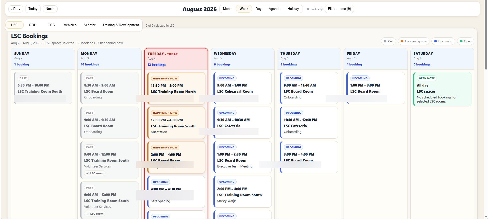

Work project · Internal company tool
Company Calendar
Helping employees find available rooms, vehicles, and company events.
The problem
Busy calendar views made it hard to read overlapping bookings or tell what was available.
What I built
I redesigned the weekly views across six calendar areas and added day and holiday views, clearer booking details, and vehicle booking links.
The result
Employees can see what's happening, what's available, and who made a booking without digging through crowded calendars.
JavaScript / Node.js / Microsoft 365

See the before and after
The earlier layout squeezed overlapping events into narrow columns. The redesign groups bookings into readable cards and shows requester and booking information where it's needed.

A Node.js service prepares the Microsoft Exchange calendar data for the interface. Available vehicles link directly to a booking form with the vehicle already selected.